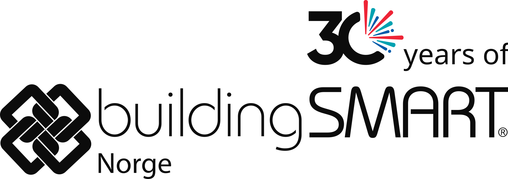

The timeline shows 30 years of buildingSMART and how openBIM has evolved from the first IFC versions in the 1990s to today's international standards and Norwegian frameworks.
The development is divided into four parallel tracks – organisational, technological, semantic and process – which together have made openBIM a robust, international digital infrastructure for the construction industry.